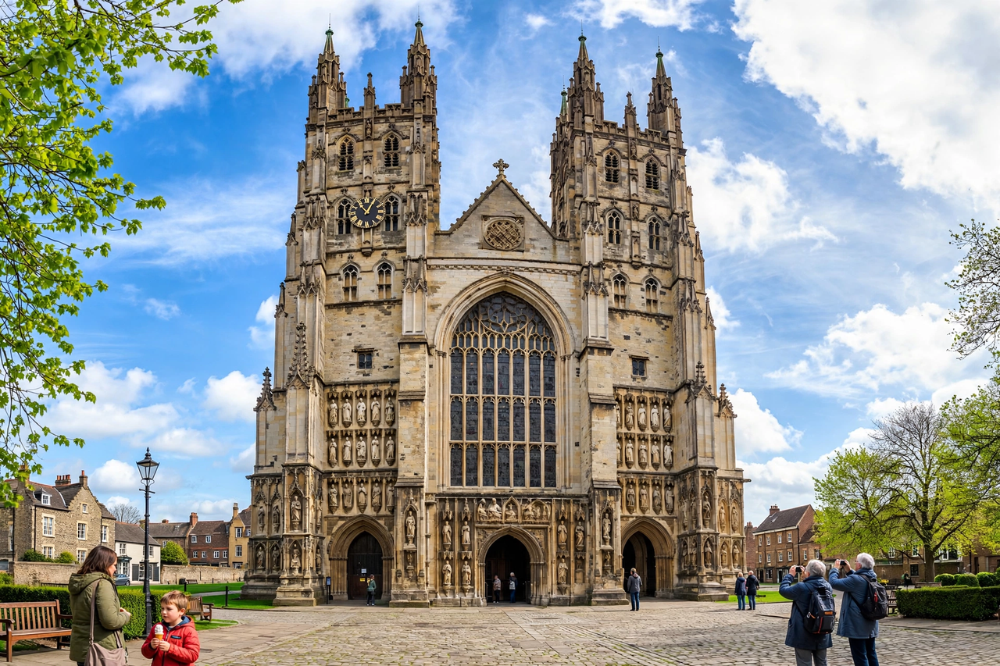

From Wikipedia, the free encyclopedia
| Anglican Communion | |
|---|---|
 Canterbury Cathedral | |
| Type | Communion of autonomous churches |
| Primus inter pares | Archbishop of Canterbury |
| Headquarters | Lambeth Palace, London; Anglican Communion Office |
| Members | c. 85 million in 42 provinces |
| Origin | 1867 (first Lambeth Conference); roots in the English Reformation |
The Anglican Communion is the third largest Christian communion in the world after the Roman Catholic Church and the Eastern Orthodox Church. Founded in 1867 in London, it consists of forty-two autonomous provincial churches (plus extra-provincial jurisdictions) in communion with the See of Canterbury, whose archbishop serves as a focus of unity without juridical authority over the provinces.
The Communion's roots lie in the Church of England's emergence during the English Reformation and in the spread of English Christianity through colonisation and missionary work — the Society for the Propagation of the Gospel (1701) and the Church Mission Society (1799) among them. The first Lambeth Conference of bishops was convened in 1867 by Archbishop Charles Longley. The Chicago-Lambeth Quadrilateral (1886/1888) set out Anglicanism's fourfold basis: the Scriptures, the creeds, the two dominical sacraments, and the historic episcopate.
Each province is governed synodically by bishops, clergy, and laity. The Communion's four "Instruments of Communion" are the Archbishop of Canterbury, the Lambeth Conference (meeting roughly every ten years), the Anglican Consultative Council (founded 1971), and the Primates' Meeting. Common life is expressed in shared liturgical inheritance from the Book of Common Prayer, the Thirty-nine Articles as a historic formulary, and networks for mission, development, and youth work.
Anglican identity is often described as a via media between Catholic and Protestant traditions, combining reformed doctrine with catholic order. Provinces span Anglo-Catholic, evangelical, and liberal traditions. Worship ranges from choral Eucharist to charismatic services, using local-language prayer books.
The ordination of women (first priests in Hong Kong in 1944; first women bishops in the United States in 1989 and in England in 2015) and debates over human sexuality — sharpened by the 2003 consecration of Gene Robinson as Bishop of New Hampshire and blessing of same-sex unions — have strained the Communion, prompting realignments such as the Global Anglican Future Conference (GAFCON) from 2008 and continuing provinces outside the Communion.